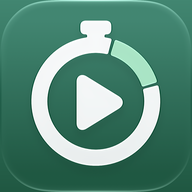

Easy to use
Tap an activity and start. Pause, resume, or stop with one tap.

Private, offline, and made for iPhone, iPhone Duo, and iPad.
Tap an activity and start. Pause, resume, or stop with one tap.
No account, no ads, no clutter. Just your time.
See time by activity, by tag, or by same-name activities together.
Day to all-time totals, trends, and timelines, with filters.
Get a nudge after the worked time you set.
Export any date range for Numbers, Excel, or Google Sheets.
Fully offline. No accounts, ads, or automatic data uploads.
Optimized for iPhone, iPhone Duo, and iPad.
AikaTrail stores your tracking data on your device and does not send it to the developer. It works fully offline and needs no account. Your device’s iCloud or computer backups may include app data, and you can choose to export or share it. Read the privacy policy for details.
On Today, add an activity with a name and, if you like, tags, an icon, and a color. Select it and tap Start session. Use Pause and Resume for breaks; paused time isn’t counted. Stop the current session before switching activities.
Tags are optional labels such as Study or Work. Several activities can share a name when their tags differ, for example Reading, Reading (Study), and Reading (Work). In Insights you can see time by activity, by tag, or with same-name activities grouped together, and filter by any activities and tags.
In Insights, tap Export data, choose the From and Through dates, and share or save the CSV file. You can choose local or UTC times, tags in one column or one column per tag, and one row per session or one row per worked stretch between pauses.
Yes. In Settings, set Day starts at to any time up to 11:59 AM. Time tracked before it counts toward the previous day in Today, Insights, Your sessions, and Export.
Tap the reminder line under Today’s timer and choose how much worked time should pass before you’re reminded. Reminders are local notifications from your device; paused time doesn’t count toward them.
Yes. Archive the activity or tag in Manage. It leaves Today but still counts in Insights and Export, and you can restore it any time. Deleting an activity removes it together with its sessions.
In Settings, tap Export diagnostics to save a small error log. It contains error events, codes, timestamps, and the app version and build, never activity names or your history. Attach it to your report together with a short description of what happened.
Ready to try AikaTrail?
Send us a question, report a problem, or share an idea.
Please include your device model and iOS version.